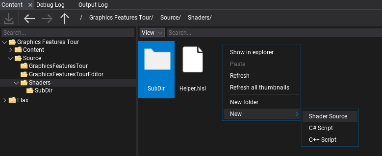
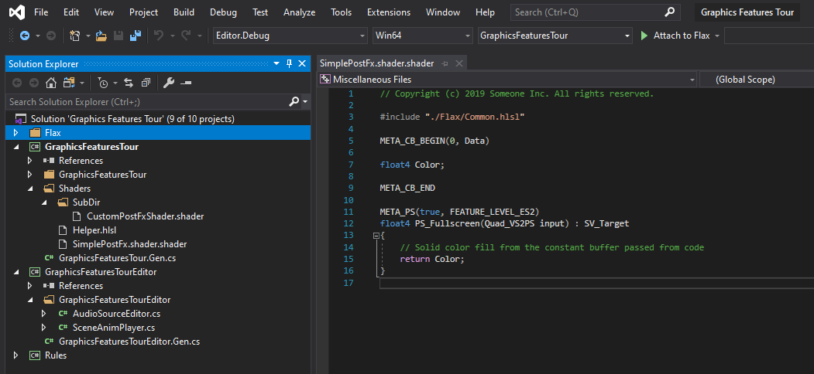
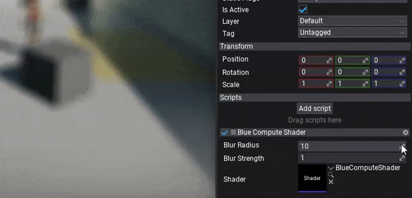

Custom Compute Shader
In this tutorial you will learn how to create and use a simple blur effect that will use a Compute Shader in two-pass to blur the input image. This example requires compute shaders and draw-indirect support from GPU which might not be available on low-end GPUs.
Compute shaders are GPU programs that don't use classical GPU pipeline such as vertex transformations, fragment shading or MSAA. They are fully configurable code that can run on GPU in async. They can be used for massively parallel computational algorithms, or to accelerate parts of game rendering. Compute shaders don't need vertex/index buffers and don't write to output render target directly but instead can read and write to arbitrary buffers and textures provided by the user.
1. Create new shader
Firstly, create empty file in folder Source/Shaders and name it in a proper way, eg. BlurComputeShader.shader. You can do it manually or use Editor and right-click in Content window shaders source folder New -> Shader.

If you're working with Visual Studio then use File -> Generate project file option to ensure new file was added to VS project. Then you can double-click to open shader in code editor.

2. Writing compute shader
Now, let's write the compute shader. In this example we use two functions: one will blur the input image horizotnally (CS_BlurH), second one will perform a vertical blur (CS_BlurV). The blur will use a configurable radius (in range 0-10) and blending intensity.
Here is an example code used in this tutorial. Follow code comments to better understand how it works.
#include "./Flax/Common.hlsl"
// Configuration constants (must match C#)
#define BLUR_MAX_SAMPLE_RADIUS 10
#define BLUR_GRID_SIZE 450
#define BLUR_APRON_SIZE BLUR_MAX_SAMPLE_RADIUS
#define BLUR_THREAD_GROUP_SIZE (BLUR_GRID_SIZE + (BLUR_APRON_SIZE * 2))
// Constant buffers data passed from CPU to GPU
META_CB_BEGIN(0, Data)
float2 Dummy0;
float BlurStrength;
float BlurRadius;
META_CB_END
// Input texture to blur and the output texture to write to
Texture2D Input : register(t0);
RWTexture2D<float4> Output : register(u0);
// Shared memory used by all threads in the group
groupshared float4 Samples[BLUR_THREAD_GROUP_SIZE];
// Compute shader blur function for horizontal pass
META_CS(true, FEATURE_LEVEL_SM5)
[numthreads(BLUR_THREAD_GROUP_SIZE, 1, 1)]
void CS_BlurH(uint3 groupID : SV_GroupID, uint3 groupThreadID : SV_GroupThreadID)
{
// These positions are relative to the "grid", AKA the horizontal group of pixels that this thread group is writing to
const int2 gridStartXY = groupID.xy * BLUR_GRID_SIZE;
const int2 gridXY = groupThreadID.xy - BLUR_APRON_SIZE;
// These positions are relative to the pixel coordinates
const int sampleX = gridStartXY.x + gridXY.x;
const int sampleY = groupID.y;
const int groupIndex = groupThreadID.x;
uint2 textureSize;
Input.GetDimensions(textureSize.x, textureSize.y);
const int2 samplePos = int2(sampleX, sampleY);
// Sample the texture
float2 sampleCoord = saturate(((float2)samplePos + 0.5f) / float2(textureSize));
float4 color = Input.SampleLevel(SamplerPointClamp, sampleCoord, 0.0f);
// Store in shared memory and sync threads
Samples[groupIndex] = color;
GroupMemoryBarrierWithGroupSync();
// Don't continue for threads in the apron, and threads outside the render target size
if (gridXY.x >= 0 && gridXY.x < BLUR_GRID_SIZE && sampleX < textureSize.x)
{
float4 outputColor = 0.0f;
float totalContribution = 0.0f;
// Gather sample taps inside the radius
for (int i = -BLUR_MAX_SAMPLE_RADIUS; i <= BLUR_MAX_SAMPLE_RADIUS; i++)
{
// Grab the sample from shared memory
float4 tap = Samples[groupIndex + i];
// Reject the sample if it's outside the CoC radius
float tapWeight = saturate(BlurRadius + 1.0f - abs(float(i)));
outputColor += tap * tapWeight;
totalContribution += tapWeight;
}
// Write out the result
outputColor /= totalContribution;
outputColor = max(outputColor, 0);
outputColor = lerp(color, outputColor, BlurStrength);
Output[samplePos] = outputColor;
}
}
// Compute shader blur function for vertical pass
META_CS(true, FEATURE_LEVEL_SM5)
[numthreads(1, BLUR_THREAD_GROUP_SIZE, 1)]
void CS_BlurV(uint3 groupID : SV_GroupID, uint3 groupThreadID : SV_GroupThreadID)
{
// These positions are relative to the "grid", AKA the horizontal group of pixels that this thread group is writing to
const int2 gridStartXY = groupID.xy * BLUR_GRID_SIZE;
const int2 gridXY = groupThreadID.xy - BLUR_APRON_SIZE;
// These positions are relative to the pixel coordinates
const int sampleX = groupID.x;
const int sampleY = gridStartXY.y + gridXY.y;
const int groupIndex = groupThreadID.y;
uint2 textureSize;
Input.GetDimensions(textureSize.x, textureSize.y);
const int2 samplePos = int2(sampleX, sampleY);
// Sample the texture
float2 sampleCoord = saturate(((float2)samplePos + 0.5f) / float2(textureSize));
float4 color = Input.SampleLevel(SamplerPointClamp, sampleCoord, 0.0f);
// Store in shared memory and sync threads
Samples[groupIndex] = color;
GroupMemoryBarrierWithGroupSync();
// Don't continue for threads in the apron, and threads outside the render target size
if (gridXY.y >= 0 && gridXY.y < BLUR_GRID_SIZE && sampleY < textureSize.y)
{
float4 outputColor = 0.0f;
float totalContribution = 0.0f;
// Gather sample taps inside the radius
for (int i = -BLUR_MAX_SAMPLE_RADIUS; i <= BLUR_MAX_SAMPLE_RADIUS; i++)
{
// Grab the sample from shared memory
float4 tap = Samples[groupIndex + i];
// Reject the sample if it's outside the CoC radius
float tapWeight = saturate(BlurRadius + 1.0f - abs(float(i)));
outputColor += tap * tapWeight;
totalContribution += tapWeight;
}
// Write out the result
outputColor /= totalContribution;
outputColor = max(outputColor, 0);
outputColor = lerp(color, outputColor, BlurStrength);
Output[samplePos] = outputColor;
}
}
3. Dispatching compute
Next step is to write a script that will invoke the compute shader execution on a GPU. To do so we will use a C# script that implements PostProcessEffect class which is used to inject custom rendering code into the in-built graphics pipeline. You can also override the Order and Location properties to have even more control over rendering.
Create C# script and add it to the any actor on the scene. You can use this tutorial to learn how to do it. Then, write the following code:
using System;
using System.Runtime.InteropServices;
using FlaxEngine;
public class BlurComputeShader : PostProcessEffect
{
/// <summary>
/// Shader constant buffer data structure that matches the HLSL source.
/// </summary>
[StructLayout(LayoutKind.Sequential)]
private struct Data
{
public Vector2 Dummy0;
public float BlurStrength;
public float BlurRadius;
}
[Tooltip("Blur effect intensity (0-1)"), Limit(0, 1.0f, 0.01f)]
public float BlurStrength = 1.0f;
[Tooltip("Blur effect radius (0-10)"), Limit(0, 10.0f, 0.1f)]
public float BlurRadius = 10.0f;
private bool _isComputeSupported;
public Shader Shader;
public override void OnEnable()
{
_isComputeSupported = GPUDevice.Instance.Limits.HasCompute;
// Register postFx to game view
MainRenderTask.Instance.CustomPostFx.Add(this);
}
public override void OnDisable()
{
// Remember to unregister from drawing
MainRenderTask.Instance?.CustomPostFx.Remove(this);
}
public override bool CanRender => base.CanRender && _isComputeSupported && Shader && Shader.IsLoaded;
public override unsafe void Render(GPUContext context, ref RenderContext renderContext, GPUTexture input, GPUTexture output)
{
// Here we perform custom rendering on top of the in-build drawing
// Set constant buffer data (memory copy is used under the hood to copy raw data from CPU to GPU memory)
var cb = Shader.GPU.GetCB(0);
if (cb != IntPtr.Zero)
{
var data = new Data
{
BlurStrength = BlurStrength,
BlurRadius = BlurRadius,
};
context.UpdateCB(cb, new IntPtr(&data));
}
// Allocate temporary textures for blurring
var desc = input.Description;
desc.Flags = GPUTextureFlags.UnorderedAccess | GPUTextureFlags.ShaderResource | GPUTextureFlags.RenderTarget;
var blurH = RenderTargetPool.Get(ref desc);
var blurV = RenderTargetPool.Get(ref desc);
// Configuration constants (must match HLSL)
const int BLUR_GRID_SIZE = 450;
// Dispatch the Compute Shader to blur input image horizontally to blurH
context.BindCB(0, cb);
context.BindSR(0, input);
context.BindUA(0, blurH.View());
var csBlurH = Shader.GPU.GetCS("CS_BlurH");
int groupCountX = (desc.Width / BLUR_GRID_SIZE) + ((desc.Width % BLUR_GRID_SIZE) > 0 ? 1 : 0);
int groupCountY = desc.Height;
context.Dispatch(csBlurH, (uint) groupCountX, (uint) groupCountY, 1);
// Clean output slot
context.BindUA(0, null);
context.FlushState();
// Dispatch the Compute Shader to blur blurH image vertically to blurV
context.BindCB(0, cb);
context.BindSR(0, blurH);
context.BindUA(0, blurV.View());
var csBlurV = Shader.GPU.GetCS("CS_BlurV");
groupCountX = desc.Width;
groupCountY = (desc.Height / BLUR_GRID_SIZE) + ((desc.Height % BLUR_GRID_SIZE) > 0 ? 1 : 0);
context.Dispatch(csBlurV, (uint) groupCountX, (uint) groupCountY, 1);
// Clean slots
context.BindSR(0, (GPUTexture) null);
context.BindUA(0, null);
context.FlushState();
// Copy blurred image to the output
context.Draw(output, blurV);
RenderTargetPool.Release(blurH);
RenderTargetPool.Release(blurV);
}
}
4. See results
The final step is to add script to actor on scene and assign Shader property to the auto-imported shader source from Content/Shaders. When changing Blur Radius property from 0 to 10 you can see the effect in action real-time. In case of problems see Output Log window in Editor as it may contain any compilation errors (for both C# script and shader code).
